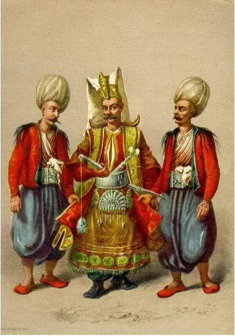
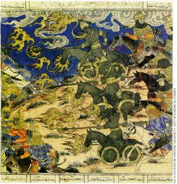
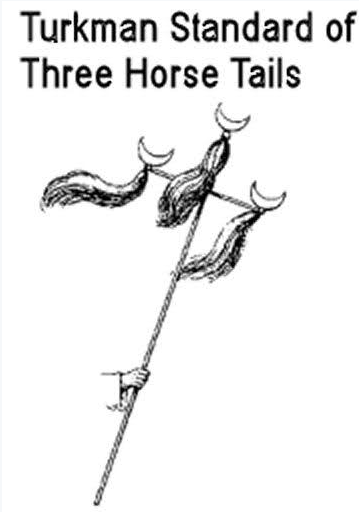
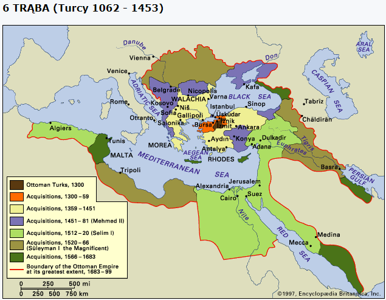

.
9 Rozdział (cz.2)
Ciąg dalszy ROZDZIAŁU 9.
Szósta trąba.
„I zatrąbił szósty anioł; i usłyszałem z czterech rogów złotego ołtarza stojącego przed Bogiem jakiś głos, (14) mówiący do szóstego anioła, który miał trąbę: Uwolnij czterech aniołów, którzy są spętani nad wielką rzeką Eufratem. (15) I zostali uwolnieni czterej aniołowie, którzy byli przygotowani na godzinę i na dzień, i na miesiąc, i na rok, aby wytracić trzecią część ludzi. (16) A liczba wojsk konnych wynosiła dwie miriady miriad; taką ich liczbę usłyszałem. (17) A takimi widziałem w widzeniu te konie i tych, którzy na nich siedzieli; mieli pancerze czerwone jak ogień, granatowe jak hiacynt, żółte jak siarka; a łby końskie były jak łby lwów, a z pysków ich wychodziły ogień i dym, i siarka. (18) Od tych trzech plag, to jest od ognia i od dymu, i od siarki, wychodzących z ich pysków, wyginęła trzecia część ludzi. (19) Albowiem moc tych koni mieści się w ich pyskach i w ich ogonach; ogony ich, bowiem są podobne do wężów mających głowy, którymi wyrządzają szkodę. (20) Pozostali ludzie, którzy nie zginęli od tych plag, nie odwrócili się od uczynków rąk swoich, nie przestając oddawać czci demonom oraz bałwanom złotym i srebrnym, i spiżowym, i kamiennym, i drewnianym, które nie mogą ani widzieć, ani słyszeć, ani chodzić, (21) i nie odwrócili się od zabójstw swoich ani od swoich czarów, ani od wszeteczeństwa swego, ani od kradzieży swoich.” (Objawienie 9:13-21).
Proroctwo odnosi się do Turków, których ogromne zastępy pod wodzą Sułtana Togrulbeka (Toghrul-Begh - wnuk Seldżuka) pojawiły się w roku 1056 roku nad Eufratem i w marszu na zachód podbijały kolejne kraje arabskie.
Arabowie dominowali w świecie islamu przez 400 lat (632-1055). Po nich hegemonię przejęli Turcy.
W 1055 roku, arabski Kalif Bagdadu został poddany protekcji Seldżuków (Turkom). W 1062/1063 turecki Sułtan Alp-Arslan Następca Togrulbeka (zm. 1062/63) przekroczył Eufrat i uderzył na Cesarstwo Bizantyjskie, pogrążone w walce ugrupowań, wyrywających sobie purpurę cesarską.
W 1067 zajął wielkie miasto Cezareę, w 1068 Ikonium i w 1071 odniósł decydujące zwycięstwo w Mantzikert, pokonując cesarz cesarza Romana IV Diogenesa. Od tego dnia Turcy systematycznie pomniejszali bizantyjskie granice, aż do do 29 maja 1453, kiedy Konstantynopol upadł, zdobyty przez Tureckich Otomanów i ostatnia trzecia część Imperium Wschodnio Rzymskiego została zniszczona.
Nie będę opisywał szczegółowo użytych w tym rozdziale symboli, gdyż większość z nich już opisałem wcześniej.
„i usłyszałem z czterech rogów złotego ołtarza” (1:1).
Głos z czterech rogów ołtarza przypomina nam głosy z piątej pieczęci, kiedy to pogański Rzym okrutnie prześladował chrześcijan „A gdy zdjął piątą pieczęć, widziałem poniżej ołtarza dusze zabitych dla Słowa Bożego i dla świadectwa, które złożyli. (10) I wołały donośnym głosem: Kiedyż, Panie święty i prawdziwy, rozpoczniesz sąd i pomścisz krew naszą na mieszkańcach ziemi?” (Objawienie 6:9-10).
Nie można było wybrać lepszego momentu w historii, aby ponownie wspomnieć o „głosach z ołtarza” – NIEWYOBRAŻALNYCH krzywdach i prześladowaniach ze strony odstępczego kościoła rzymsko-katolickiego spadających na wiernych świadków Chrystusa.
Terror „inkwizycji” i „świętych wojen” podgrzewany przez papiestwo w imię boga w trójcy, pochłaniał dziesiątki milionów ludzkich istnień, dopełniając miary swych zbrodni, tak, iż nadszedł czas na kolejny sąd nad pogańskim „chrześcijaństwem” pod postacią „szóstej trąby”.
„Odbywały się "święte wojny" przeciwko muzułmańskim niewiernym, przeciw heretykom, jak Albigensi we Francji, czy Waldensi, przeciw opornym chrześcijańskim monarchom, nawet przeciw pokornym miastom, które nie zadowoliły w jakiś sposób papieża. Te wojny zawsze określano, jako prawdziwe "dla i przez krzyż”. (Historia Konfliktu między chrześcijaństwem i Islamem, Andrewem Wheatcroft, p.176).
„Uwolnij czterech aniołów, którzy są spętani nad wielką rzeką Eufratem.” (9:14).
Słowa te oznaczają dozwolenie/zesłanie narodu/armii na inny kraj, aby ukarać ludzi, którzy świadomie przestępują prawo Boże, podobnie jak to miało miejsce wcześniej:
„przeto Pan sprowadzi na nich wody Rzeki, potężne i wielkie, króla asyryjskiego i całą jego potęgę. I wystąpi ze wszystkich swoich koryt, i wyleje ze wszystkich swoich brzegów. (8) I wedrze się do Judy, zaleje i wzbierze” (Izajasza 8:7-8).
„Biada! Wrzawa licznych ludów! Burzą się, jak burzy się morze. Szum narodów! Szumią jak szum gwałtownych wód” (Izajasza 17:12).
Turcy byli gotowi na obszarze, na wschód od Eufratu. Ta rzeka może być zaklasyfikowana, jako granica między Turkami i Imperium Rzymskim. Edward Gibbon, mówiąc o początku inwazji tureckiej w Togrul Beg oświadczył:
„Wojska Alp Arslen przeszły nad Eufratem na czele tureckiej kawalerii”.
„Przełom XIII i XIV wieku i związane z nim powstanie na terenie Anatolii nowego państwa tureckiego pod wodzą Osmana, okazało się dla Europy ciekawym przełomem. Dochodzi, bowiem do zjawiska niespotykanego wcześniej na taką skalę – zderzenia się dwóch silnych, hermetycznych kultur – europejskiej opartej wciąż jeszcze na uniwersalizmie chrześcijańskim i tureckiej, której rdzeń stanowi islamski fanatyzm. Europa staje, więc w sytuacji, w jakiej kilkanaście wieków wcześniej stanęło Imperium Romanum – w obliczu barbarzyńskiej inwazji – z tą jednak różnicą, że ma przeciwko sobie cywilizację równie zwartą i potężną jak ona sama, a w dodatku posiadającą silne argumenty ideologiczne wynikające z religii właśnie. Turcy zderzyli się z Europą niby potężny taran – wpływ i skutki tego uderzenia okazały się przemożne.” (Historia Powszechna, Imperium Otomańskie).
Była to odpowiedź na RZEŹ, którą urządził sobie „mały róg” – papiestwo. Nie sposób powstrzymać łez, kiedy się odnajduje różne zapisy dotyczące tamtego ciemnego okresu dominacji szczególnego narzędzia szatana – katolicyzmu…
„A liczba wojsk konnych wynosiła dwie miriady miriad; taką ich liczbę usłyszałem.” (9:16).
Podobne określenia użyto w stosunku do wojsk Medo-Perskich nadciągających na Babilon:
„Oto lud nadciąga z północy i naród potężny z wieloma królami rusza z krańców ziemi. (42) Trzymają łuk i włócznię, są srodzy i nie znają litości. Ich wrzawa szumi jak morze, cwałują na rumakach: Każdy gotowy do boju przeciwko tobie, córko babilońska.” (Jeremiasza 50:41).
Wskazuje to, że podobnie jak w czasach króla Cyrusa, kiedy zabiegi z rzeką Eufratu spowodowały upadek Babilonu, tak podczas szóstej trąby Wschodnie Imperium Rzymskie spotka niespodziewany upadek (Jeremiasza 50:33-40).
„I zostali uwolnieni czterej aniołowie, którzy byli przygotowani na godzinę i na dzień, i na miesiąc, i na rok, aby wytracić trzecią część ludzi.” (9:15).
1 rok = 360 dni = 360 lat.
1 miesiąc = 30 dni = 30 lat.
1 dzień = 1 dzień = 1 rok.
1 godzina = 1/24 dnia = 1/24 roku = 15 dni.
Suma = 391 lat i 15 dni.
Licząc dzień za rok (Ezechiela 4:6) dochodzimy do 391 lat. Tyle lat upłynęło od 1062/1063 roku, kiedy Turcy przekroczyli Eufrat i po raz pierwszy zaatakowali Bizancjum, aż do 1453 roku, kiedy upadła jego stolica – Konstantynopol. Tym samym upadła wschodnia część Imperium Rzymu.
Przypadek? Raczej doskonałe wypełnienie proroctwa w czasie.
Jest jeszcze taka ciekawostka:
„Krwawy Księżyc pojawił się również na niebie 22 V 1453 roku, wieszcząc obrońcom Konstantynopola rychłe zdobycie miasta. Rzeczywiście, w tydzień później, wojska tureckie po 53 dniach oblężenia zdobyły stolicę Cesarstwa Bizantyńskiego, przypieczętowując tym samym jego upadek. Chrześcijańska Europa stanęła oko w oko wobec potęgi Imperium Osmańskiego, rozpościerającego się od Eufratu po Dunaj.” (Zaćmienia na przestrzeni dziejów).
Akurat wtedy, gdy od trzech dni księżyc był w pełni, miało miejsce zaćmienie 2/3 powierzchni księżyca, który przez 4 godziny wyglądał jak symbol islamu.
„A takimi widziałem w widzeniu te konie i tych, którzy na nich siedzieli; mieli pancerze czerwone jak ogień, granatowe jak hiacynt, żółte jak siarka; a łby końskie były jak łby lwów, a z pysków ich wychodziły ogień i dym, i siarka.” (9:17).
Otomańscy wojownicy ubierali się głównie w kolory: czerwony (ogień), niebieski (hiacynt) i żółty (siarka). To wyraźnie widać na wielu rysunkach datujących otomańskich czasów:

W 1453 Mahomet II z 258.000 armią rozpoczyna atak na Konstantynopol - stolicę Wschodniego Imperium Rzymskiego.
„Sułtan Mahomet II uznał za swe główne zadanie zdobycie Konstantynopola.Odrzuciwszy wszelkie próby rokowań, wokół nieszczęsnego miasta pobudował zamki, uniemożliwiając dowóz żywności, a następnie w 1453 r. rozpoczął oblężenie, otaczającKonstantynopol ze wszystkich stron armią i flotą. Ostatni cesarz wschodniorzymski Konstantyn XI i współkierujący obroną genueńczyk Jan Giustiniani przez dwa miesiące odpierali szturmy tureckie, wspierane ostrzeliwaniem z dział niespotykanego dotąd kalibru. Zdobycie Konstantynopola 29 maja 1453 r. to pierwszy wielki triumf artylerii, przed którą nie mogły się ostać stare mury Teodozjusza II” (Benedykt Zientara, „Historia powszechna średniowiecza”).
Angielski historyk, Edward Gibbon napisał:
„Salwy lanc i strzały, którym towarzyszył dym, dźwięk i ogień muszkietów i armat... Długi rząd tureckiej artylerii strzela w mury: czternaście baterii piorunujących fortyfikacji, które stały, rozbito ze wszystkich stron przez armatki turków, nastąpiło wiele naruszeń muru, a przy bramie św. Romanusa, cztery wieże są zrównane z ziemią...Artyleria otomańska grzmiała na wszystkie strony zamieniając obóz i miasto w chmurę dymu, która mogła być rozwiana przez ostateczne wyzwolenia lub zniszczenia Cesarstwa Rzymskiego… Podwójne mury zostały zmniejszone przez ich armaty w stertę gruzów”.
Turecki historyk pisał o tym wydarzeniu:
„Muzułmanie umieścili swoje działa w bardzo dobrych pozycjach, mur Konstantynopola był podziurawiony w tysiącach miejsc. Ogień buchający z pysków maszyn wojennych pokrył cały teren zamieniając go w noc, ku przerażeniu nieszczęśliwych niewiernych.”
„Od tych trzech plag, to jest od ognia i od dymu, i od siarki, wychodzących z ich pysków, wyginęła trzecia część ludzi.” (9:18).
Trzecia część ludzi, czyli upadek Wschodniego Cesarstwa Rzymskiego (395-1453), co było trzecim etapem upadku Imperium Rzymskiego
„Księga konnych umiejętności jeździeckich” oraz „Sztuka wojny” zostały napisane w 1285 przez Najm al-Din Ahdaba, oficera Syrii. Jest tam mnóstwo informacji o tym, jak przyrządzać olej, jako paliwo podobne do benzyny, jak przygotować materiały wybuchowe z prochu, jak dopasować kilka bezpieczników do poszczególnych rodzajów „strzelb”, a nawet, jak zbudować „pływające ognie” - rakiety!Pojawiła się „Żelazna kawaleria” - kołowe maszyny wyglądały jak konie, które wypluwają ogień. Te bronie zaczęły być używane w 14 wieku w Persji” (Aramco World Magazine „Oil guns”, styczeń - luty 1995).
W bitwie pod Konstantynopolem w 1453 roku po raz pierwszy użyto dział artyleryjskich o tak wielkim kalibrze wykorzystujących proch strzelniczy, wynalezionych zaledwie wiek wcześniej. Dlatego też czytamy, że „z pysków ich wychodziły ogień i dym, i siarka”.
Oto malowidło pochodzące z tamtego okresu, przedstawiające „Żelazną Kawalerią”, czyli maszyny na kołach, wyglądające jak konie ziejące z pysków ogniem.

(Persian miniature from the Demotte, “The Oil Weapons”).
Ta broń została wynaleziona w XIV wieku w Persji, przy pomocy nafty, którą to szeroko wykorzystywali Turcy.
Jednym z przykładów jej szerokiego stosowania jest to, jak ich muzułmańscy wojownicy moczyli naftą swoje ogniotrwałe uniformy, pod którymi mieli dodatkową ochronną "wyściółkę" dla nich i ich konia. Podpalali naftę i tak niczym żywe pochodnie pod osłoną nocy wpadali do obozów europejskich krzyżowców, którzy myśleli, że „diabeł przybył po nich”! Widok palących się „wojowników z piekła”, sprawiał, że krzyżowcy uciekli w panice…
„Albowiem moc tych koni mieści się w ich pyskach i w ich ogonach; ogony ich, bowiem są podobne do wężów mających głowy, którymi wyrządzają szkodę.” (9:19).
Siłę Turków stanowiły nie tylko działa strzelnicze (moc w pyskach), ale również Koran, którego też ducha odnowili, gdyż w między czasie zdążył ostygnąć.
Turcy podobnie jak arabowie z wielkim wigorem rozgłaszali i próbowali narzucać ISLAM:
„Dlatego Pan odetnie Izraelowi głowę i ogon, kiść palmową i sitowie w jednym dniu. (14) Głową jest starszy i poważany mąż, a ogonem prorok nauczający kłamstwa.” (Izajasza 9:13-14).
Jako ciekawostkę można także dodać, że końskie ogony także w sposób literalny bardzo blisko kojarzą się z właśnie z Turkami. Znamienne, że tylko Turcy stosowali końskie ogony, jako symbol siły i stanowiska. Obcięty ogon koński był symbolem tureckiego urzędu, rangi, stopnia. Jeżeli ktoś utracił na przykład swoją rangę lub wysoką pozycje to odbierano mu koński ogon. Często zatykano ogony na włócznie, im więcej ogonów tym więcej zwycięstw to znaczyło.Tureckim sztandarem były 3 końskie ogony przyczepione do krzyżowego pala:

„Pozostali ludzie, którzy nie zginęli od tych plag, nie odwrócili się od uczynków rąk swoich, nie przestając oddawać czci demonom oraz bałwanom złotym i srebrnym, i spiżowym, i kamiennym, i drewnianym, które nie mogą ani widzieć, ani słyszeć, ani chodzić” (9:20).
Islam wyruszył na podbój również z hasłami oczyszczenia „niewiernych” z bałwochwalczego kultu relikwii i obrazów.
Jednakże znaczna część Europy, zwłaszcza zachodnia pozostała nadal „chrześcijańska” – niestety, bo z prawdziwym chrześcijaństwem nie miała nic wspólnego (zobacz Rozdział 2, List (czwarty) do zboru w Tiatyrze, który dotyczy okresu od 538 do około 1500 roku, to ten sam okres).
Od rzeczy wymienionych w 20 i 21 wersecie tego rozdziału większość ludzi nie odwróciła się do dziś, w tym sami muzułmanie i ich „czarny kamień” w Kaaba.
Wielu historyków uznaje upadek Konstantynopola za kluczowy moment w historii Europy, oddzielający wieki średnie od epoki odrodzenia, wyjaśniając to upadkiem starego religijnego porządku oraz zastosowaniem nowych broni na polu walki takich jak proch czy artyleria. Można powiedzieć, że ta opinia niejako pokrywa się również z chronologią prorockich wydarzeń księgi Objawienia.
Kolejna trzecia część Imperium Rzymskiego została zniszczona.
- pierwsza, zachodnia część padła w 476 roku poprzez plemiona germańskie (pierwsze 4 trąby),
- druga, południowa część padła na przestrzeni VII i VIII wieku z ręki arabów (5 trąba),
- trzecia część padła w 1453 z ręki turków (6 trąba).

kopia strony: https://jehoszua.ddv.pl/readarticle.php?article_id=38 Wszelkie prawa autorskie należą się autorowi tej strony
5274f4a729